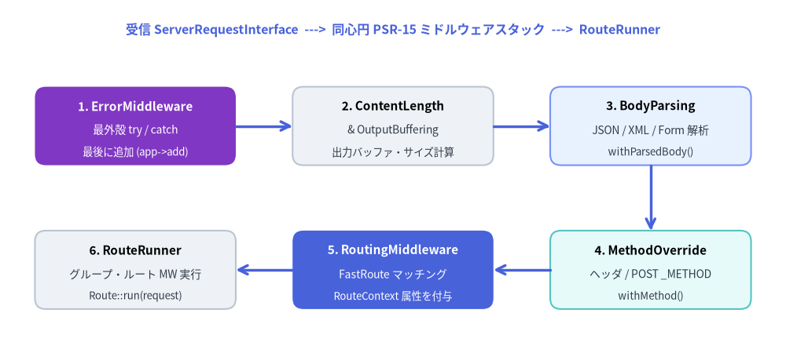
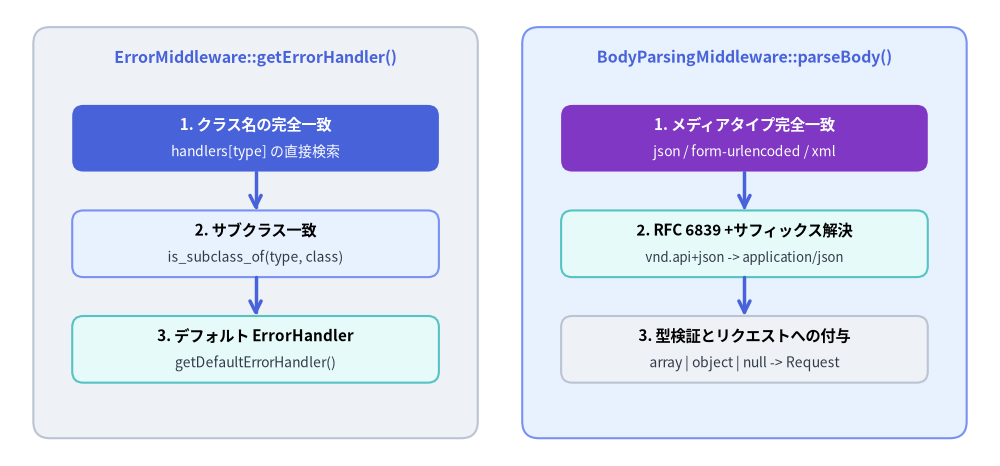

ミドルウェア (Slim\Middleware)
Slim\Middleware 名前空間は、Slim 4 に標準同梱されている 6 つの PSR-15（Psr\Http\Server\MiddlewareInterface）ミドルウェア実装を提供します：RoutingMiddleware、ErrorMiddleware、BodyParsingMiddleware、ContentLengthMiddleware、MethodOverrideMiddleware、および OutputBufferingMiddleware。Slim の MiddlewareDispatcher はミドルウェアを同心円状の LIFO（後入れ先出し）オニオン構造でラップするため、最後に追加（$app->add()）されたミドルウェアが、受信リクエストに対して最初に実行されます。

Source Code
from drawlib.canvas import save, setup
from drawlib.lines import line
from drawlib.shapes import rectangle
from drawlib.styles import Styles
from drawlib.text import text
setup(width=180, height=82)
# Outer frame label
text(
(90, 75),
"受信 ServerRequestInterface ---> 同心円 PSR-15 ミドルウェアスタック ---> RouteRunner",
style=Styles.PrimaryBold.patch(text_size=11.5),
)
# Top Row (Outer to Mid-Layer)
rectangle(
(31, 53),
width=46,
height=18,
style=Styles.AccentFlat.patch(shape_r=2.5),
)
text((31, 57.5), "1. ErrorMiddleware", style=Styles.WhiteBold.patch(text_size=11.0))
text((31, 52.0), "最外殻 try / catch", style=Styles.White.patch(text_size=10.0))
text((31, 47.0), "最後に追加 (app->add)", style=Styles.White.patch(text_size=9.5))
rectangle(
(90, 53),
width=46,
height=18,
style=Styles.Neutral.patch(shape_r=2.5),
)
text((90, 57.5), "2. ContentLength", style=Styles.BlackBold.patch(text_size=11.0))
text((90, 52.0), "& OutputBuffering", style=Styles.Dark.patch(text_size=10.0))
text((90, 47.0), "出力バッファ・サイズ計算", style=Styles.Dark.patch(text_size=9.5))
rectangle(
(149, 53),
width=46,
height=18,
style=Styles.PrimaryNeutral.patch(shape_r=2.5),
)
text((149, 57.5), "3. BodyParsing", style=Styles.BlackBold.patch(text_size=11.0))
text((149, 52.0), "JSON / XML / Form 解析", style=Styles.Dark.patch(text_size=10.0))
text((149, 47.0), "withParsedBody()", style=Styles.Dark.patch(text_size=9.5))
# Bottom Row (Inner Layers to Kernel)
rectangle(
(149, 20),
width=46,
height=18,
style=Styles.SecondaryNeutral.patch(shape_r=2.5),
)
text((149, 24.5), "4. MethodOverride", style=Styles.BlackBold.patch(text_size=11.0))
text((149, 19.0), "ヘッダ / POST _METHOD", style=Styles.Dark.patch(text_size=10.0))
text((149, 14.0), "withMethod()", style=Styles.Dark.patch(text_size=9.5))
rectangle(
(90, 20),
width=46,
height=18,
style=Styles.PrimaryFlat.patch(shape_r=2.5),
)
text((90, 24.5), "5. RoutingMiddleware", style=Styles.WhiteBold.patch(text_size=11.0))
text((90, 19.0), "FastRoute マッチング", style=Styles.White.patch(text_size=10.0))
text((90, 14.0), "RouteContext 属性を付与", style=Styles.White.patch(text_size=9.5))
rectangle(
(31, 20),
width=46,
height=18,
style=Styles.Neutral.patch(shape_r=2.5),
)
text((31, 24.5), "6. RouteRunner", style=Styles.BlackBold.patch(text_size=11.0))
text((31, 19.0), "グループ・ルート MW 実行", style=Styles.Dark.patch(text_size=10.0))
text((31, 14.0), "Route::run(request)", style=Styles.Dark.patch(text_size=9.5))
# Arrows connecting 1 -> 2 -> 3 -> 4 -> 5 -> 6
line((54, 53), (67, 53), arrow_head="->", style=Styles.PrimaryBold)
line((113, 53), (126, 53), arrow_head="->", style=Styles.PrimaryBold)
line((149, 44), (149, 29), arrow_head="->", style=Styles.PrimaryBold)
line((126, 20), (113, 20), arrow_head="->", style=Styles.PrimaryBold)
line((67, 20), (54, 20), arrow_head="->", style=Styles.PrimaryBold)
save()
classSlim\Middleware\RoutingMiddleware#
- ソースファイル:
Slim/Middleware/RoutingMiddleware.php - 名前空間:
Slim\Middleware - 実装インターフェース:
Psr\Http\Server\MiddlewareInterface
RoutingMiddleware は、後続のミドルウェアや RouteRunner に到達する前に RouteResolverInterface を通じて FastRoute による URI・HTTP メソッドのマッチングを実行します。ServerRequestInterface に RouteContext::ROUTE_PARSER、RouteContext::ROUTING_RESULTS、および RouteContext::ROUTE 属性を設定し、マッチしなかった場合は HttpNotFoundException または HttpMethodNotAllowedException をスローします。
クラスシグネチャ#
<?php
declare(strict_types=1);
namespace Slim\Middleware;
use Psr\Http\Message\ResponseInterface;
use Psr\Http\Message\ServerRequestInterface;
use Psr\Http\Server\MiddlewareInterface;
use Psr\Http\Server\RequestHandlerInterface;
use RuntimeException;
use Slim\Exception\HttpMethodNotAllowedException;
use Slim\Exception\HttpNotFoundException;
use Slim\Interfaces\RouteParserInterface;
use Slim\Interfaces\RouteResolverInterface;
use Slim\Routing\RoutingResults;
class RoutingMiddleware implements MiddlewareInterface
{
protected RouteResolverInterface $routeResolver;
protected RouteParserInterface $routeParser;
public function __construct(
RouteResolverInterface $routeResolver,
RouteParserInterface $routeParser
);
public function process(
ServerRequestInterface $request,
RequestHandlerInterface $handler
): ResponseInterface;
public function performRouting(ServerRequestInterface $request): ServerRequestInterface;
protected function resolveRoutingResultsFromRequest(
ServerRequestInterface $request
): RoutingResults;
}
プロパティ#
| プロパティ | 型 | 可視性 | 説明 |
|---|---|---|---|
$routeResolver |
RouteResolverInterface |
protected |
RoutingResults の計算と、マッチしたルート識別子から RouteInterface への解決を行います。 |
$routeParser |
RouteParserInterface |
protected |
$request の RouteContext::ROUTE_PARSER（'__routeParser__'）属性に設定されるルートパーサ。 |
メソッドとパラメータ#
| メソッド | パラメータと型 | 戻り値の型 | 説明 |
|---|---|---|---|
__construct |
RouteResolverInterface $routeResolver, RouteParserInterface $routeParser |
void |
ルートリゾルバとルートパーサでミドルウェアを初期化します。 |
process |
ServerRequestInterface $request, RequestHandlerInterface $handler |
ResponseInterface |
$this->performRouting($request) を実行し、ルーティング属性が付与されたリクエストを $handler->handle($request) に渡します。 |
performRouting |
ServerRequestInterface $request |
ServerRequestInterface |
RouteContext::ROUTE_PARSER と RouteContext::ROUTING_RESULTS 属性を設定します。RoutingResults::FOUND 時はマッチしたルートに引数をセット（prepare()）して RouteContext::ROUTE 属性に格納します。NOT_FOUND 時は HttpNotFoundException、METHOD_NOT_ALLOWED 時は許可メソッド一覧付きの HttpMethodNotAllowedException をスローします。 |
resolveRoutingResultsFromRequest (protected) |
ServerRequestInterface $request |
RoutingResults |
$this->routeResolver->computeRoutingResults($request->getUri()->getPath(), $request->getMethod()) を呼び出してディスパッチ結果を返します。 |
使用例#
use Slim\Factory\AppFactory;
$app = AppFactory::create();
// ErrorMiddleware より前（内側）に RoutingMiddleware を登録:
$app->addRoutingMiddleware();
// addRoutingMiddleware() より前に add() されたミドルウェアからは RouteContext を参照可能:
$app->addErrorMiddleware(true, true, true);
classSlim\Middleware\ErrorMiddleware#
- ソースファイル:
Slim/Middleware/ErrorMiddleware.php - 名前空間:
Slim\Middleware - 実装インターフェース:
Psr\Http\Server\MiddlewareInterface
ErrorMiddleware は後続のリクエストハンドラ実行を try / catch (Throwable $e) で囲み、捕捉した例外や PHP エラーを例外型ごとにマッピングされた ErrorHandlerInterface またはカスタムエラーハンドラへ委譲します。捕捉した例外が HttpException のサブクラスである場合、$exception->getRequest() から最新のリクエストオブジェクトを取り出すため、パイプライン内部で付与されたルーティング属性などをエラーレンダラ側でも参照できます。
クラスシグネチャ#
<?php
declare(strict_types=1);
namespace Slim\Middleware;
use Psr\Http\Message\ResponseFactoryInterface;
use Psr\Http\Message\ResponseInterface;
use Psr\Http\Message\ServerRequestInterface;
use Psr\Http\Server\MiddlewareInterface;
use Psr\Http\Server\RequestHandlerInterface;
use Psr\Log\LoggerInterface;
use Slim\Handlers\ErrorHandler;
use Slim\Interfaces\CallableResolverInterface;
use Slim\Interfaces\ErrorHandlerInterface;
use Throwable;
/** @api */
class ErrorMiddleware implements MiddlewareInterface
{
protected CallableResolverInterface $callableResolver;
protected ResponseFactoryInterface $responseFactory;
protected bool $displayErrorDetails;
protected bool $logErrors;
protected bool $logErrorDetails;
protected ?LoggerInterface $logger = null;
protected array $handlers = [];
protected array $subClassHandlers = [];
protected $defaultErrorHandler;
public function __construct(
CallableResolverInterface $callableResolver,
ResponseFactoryInterface $responseFactory,
bool $displayErrorDetails,
bool $logErrors,
bool $logErrorDetails,
?LoggerInterface $logger = null
);
public function process(
ServerRequestInterface $request,
RequestHandlerInterface $handler
): ResponseInterface;
public function handleException(
ServerRequestInterface $request,
Throwable $exception
): ResponseInterface;
public function getErrorHandler(string $type);
public function getDefaultErrorHandler();
public function setDefaultErrorHandler($handler): self;
public function setErrorHandler(
$typeOrTypes,
$handler,
bool $handleSubclasses = false
): self;
}
プロパティ#
| プロパティ | 型 | デフォルト値 | 説明 |
|---|---|---|---|
$callableResolver |
CallableResolverInterface |
— | 文字列・コンテナキー形式のエラーハンドラ定義を呼び出し可能な callable に解決します。 |
$responseFactory |
ResponseFactoryInterface |
— | デフォルトの ErrorHandler を遅延生成する際に渡される PSR-17 レスポンスファクトリ。 |
$displayErrorDetails |
bool |
— | 例外メッセージやスタックトレースの詳細をエラーレスポンスに含めるかどうか。 |
$logErrors |
bool |
— | エラーハンドラで例外のログ出力を行うかどうか。 |
$logErrorDetails |
bool |
— | ログ出力時にスタックトレースやチェインされた原因例外の詳細を含めるかどうか。 |
$logger |
?LoggerInterface |
null |
デフォルトの ErrorHandler に渡される任意の PSR-3 ロガー。 |
$handlers |
array<class-string, ErrorHandlerInterface|callable|string> |
[] |
例外クラス名の完全一致マップ。 |
$subClassHandlers |
array<class-string, ErrorHandlerInterface|callable|string> |
[] |
is_subclass_of() で判定される親例外クラス / インターフェース名マップ。 |
$defaultErrorHandler |
ErrorHandlerInterface|callable|string|null |
null |
デフォルトのフォールバックエラーハンドラ（未設定時は Slim\Handlers\ErrorHandler を遅延生成）。 |
メソッドとパラメータ#
| メソッド | パラメータと型 | 戻り値の型 | 説明 |
|---|---|---|---|
__construct |
CallableResolverInterface $callableResolver, ResponseFactoryInterface $responseFactory, bool $displayErrorDetails, bool $logErrors, bool $logErrorDetails, ?LoggerInterface $logger = null |
void |
エラー詳細表示フラグ、ログ出力フラグ、および各種依存オブジェクトを設定します。 |
process |
ServerRequestInterface $request, RequestHandlerInterface $handler |
ResponseInterface |
try ブロック内で $handler->handle($request) を実行し、Throwable がスローされた場合は handleException() に委譲します。 |
handleException |
ServerRequestInterface $request, Throwable $exception |
ResponseInterface |
$exception instanceof HttpException の場合は $request を $exception->getRequest() に差し替え、getErrorHandler(get_class($exception)) で解決したハンドラに ($request, $exception, $displayErrorDetails, $logErrors, $logErrorDetails) を渡して呼び出します。 |
getErrorHandler |
string $type |
callable|ErrorHandler |
$this->handlers[$type] -> $this->subClassHandlers[$type] -> is_subclass_of($type, $class) による $this->subClassHandlers 走査の順に検索し、該当がなければ getDefaultErrorHandler() を返します。 |
getDefaultErrorHandler |
(なし) | ErrorHandler|callable |
$defaultErrorHandler === null の場合は Slim\Handlers\ErrorHandler を生成し、$callableResolver->resolve() で解決して返します。 |
setDefaultErrorHandler |
string|callable|ErrorHandlerInterface $handler |
self |
デフォルトのエラーハンドラを設定し、$this を返します。 |
setErrorHandler |
string|string[] $typeOrTypes, string|callable|ErrorHandlerInterface $handler, bool $handleSubclasses = false |
self |
1 つまたは複数の例外クラス名に対するハンドラを登録します（$handleSubclasses = true の場合はサブクラスにも適用）。 |
使用例#
use DomainException;
use Slim\Factory\AppFactory;
$app = AppFactory::create();
$errorMiddleware = $app->addErrorMiddleware(false, true, true, $logger);
// DomainException およびその全サブクラスに対するカスタムハンドラを登録
$errorMiddleware->setErrorHandler(
DomainException::class,
CustomDomainErrorHandler::class,
true
);
// デフォルト ErrorHandler の出力形式を JSON に固定
$defaultHandler = $errorMiddleware->getDefaultErrorHandler();
$defaultHandler->forceContentType('application/json');
classSlim\Middleware\BodyParsingMiddleware#
- ソースファイル:
Slim/Middleware/BodyParsingMiddleware.php - 名前空間:
Slim\Middleware - 実装インターフェース:
Psr\Http\Server\MiddlewareInterface
BodyParsingMiddleware は、$request->getParsedBody() が空の場合に受信リクエストの Content-Type ヘッダを検査し、メディアタイプ別のパーサレジストリを用いてリクエストボディストリームを解析し、$request->withParsedBody($parsedBody) で新しいリクエストインスタンスを生成して後続へ渡します。標準で application/json、application/x-www-form-urlencoded、application/xml、text/xml の 4 種類のパーサを備えるほか、RFC 6839 の構造化構文サフィックス（+json、+xml など）へのフォールバック解決も自動的に行います。

Source Code
from drawlib.canvas import save, setup
from drawlib.lines import line
from drawlib.shapes import rectangle
from drawlib.styles import Styles
from drawlib.text import text
setup(width=180, height=84)
# Left Panel: ErrorMiddleware
rectangle(
(46, 42),
width=80,
height=74,
style=Styles.Neutral.patch(shape_r=3.0),
)
text((46, 73.5), "ErrorMiddleware::getErrorHandler()", style=Styles.PrimaryBold.patch(text_size=11.5))
rectangle(
(46, 59),
width=66,
height=12,
style=Styles.PrimaryFlat.patch(shape_r=2.0),
)
text((46, 61.5), "1. クラス名の完全一致", style=Styles.WhiteBold.patch(text_size=11.0))
text((46, 56.5), "handlers[type] の直接検索", style=Styles.White.patch(text_size=10.0))
rectangle(
(46, 40),
width=66,
height=12,
style=Styles.PrimaryNeutral.patch(shape_r=2.0),
)
text((46, 42.5), "2. サブクラス一致", style=Styles.BlackBold.patch(text_size=11.0))
text((46, 37.5), "is_subclass_of(type, class)", style=Styles.Dark.patch(text_size=10.0))
rectangle(
(46, 21),
width=66,
height=12,
style=Styles.SecondaryNeutral.patch(shape_r=2.0),
)
text((46, 23.5), "3. デフォルト ErrorHandler", style=Styles.BlackBold.patch(text_size=11.0))
text((46, 18.5), "getDefaultErrorHandler()", style=Styles.Dark.patch(text_size=10.0))
line((46, 53), (46, 46), arrow_head="->", style=Styles.PrimaryBold)
line((46, 34), (46, 27), arrow_head="->", style=Styles.PrimaryBold)
# Right Panel: BodyParsingMiddleware
rectangle(
(134, 42),
width=80,
height=74,
style=Styles.PrimaryNeutral.patch(shape_r=3.0),
)
text((134, 73.5), "BodyParsingMiddleware::parseBody()", style=Styles.PrimaryBold.patch(text_size=11.5))
rectangle(
(134, 59),
width=66,
height=12,
style=Styles.AccentFlat.patch(shape_r=2.0),
)
text((134, 61.5), "1. メディアタイプ完全一致", style=Styles.WhiteBold.patch(text_size=11.0))
text((134, 56.5), "json / form-urlencoded / xml", style=Styles.White.patch(text_size=10.0))
rectangle(
(134, 40),
width=66,
height=12,
style=Styles.SecondaryNeutral.patch(shape_r=2.0),
)
text((134, 42.5), "2. RFC 6839 +サフィックス解決", style=Styles.BlackBold.patch(text_size=11.0))
text((134, 37.5), "vnd.api+json -> application/json", style=Styles.Dark.patch(text_size=9.5))
rectangle(
(134, 21),
width=66,
height=12,
style=Styles.Neutral.patch(shape_r=2.0),
)
text((134, 23.5), "3. 型検証とリクエストへの付与", style=Styles.BlackBold.patch(text_size=11.0))
text((134, 18.5), "array | object | null -> Request", style=Styles.Dark.patch(text_size=10.0))
line((134, 53), (134, 46), arrow_head="->", style=Styles.PrimaryBold)
line((134, 34), (134, 27), arrow_head="->", style=Styles.PrimaryBold)
save()
クラスシグネチャ#
<?php
declare(strict_types=1);
namespace Slim\Middleware;
use Psr\Http\Message\ResponseInterface;
use Psr\Http\Message\ServerRequestInterface;
use Psr\Http\Server\MiddlewareInterface;
use Psr\Http\Server\RequestHandlerInterface;
use RuntimeException;
/** @api */
class BodyParsingMiddleware implements MiddlewareInterface
{
/** @var callable[] */
protected array $bodyParsers;
/**
* @param callable[] $bodyParsers
*/
public function __construct(array $bodyParsers = []);
public function process(
ServerRequestInterface $request,
RequestHandlerInterface $handler
): ResponseInterface;
public function registerBodyParser(string $mediaType, callable $callable): self;
public function hasBodyParser(string $mediaType): bool;
public function getBodyParser(string $mediaType): callable;
protected function registerDefaultBodyParsers(): void;
protected function parseBody(ServerRequestInterface $request);
protected function getMediaType(ServerRequestInterface $request): ?string;
protected static function disableXmlEntityLoader(bool $disable): bool;
}
プロパティと標準パーサ#
| プロパティ / メディアタイプ | 型 / パーサの動作 | 説明 |
|---|---|---|
$bodyParsers |
array<string, callable> |
小文字メディアタイプ文字列からパーサ fn(string $input): array|object|null への連想配列。 |
application/json |
json_decode($input, true) |
JSON 文字列を連想配列（array）にデコードします（結果が配列でない場合は null）。 |
application/x-www-form-urlencoded |
parse_str($input, $data) |
URL エンコードされたフォーム文字列を連想配列（array）にパースします。 |
application/xml, text/xml |
simplexml_load_string($input) |
外部エンティティ読み込みを無効化したうえで XML を解析し、SimpleXMLElement または null を返します。 |
メソッドとパラメータ#
| メソッド | パラメータと型 | 戻り値の型 | 説明 |
|---|---|---|---|
__construct |
array<string, callable> $bodyParsers = [] |
void |
registerDefaultBodyParsers() を呼び出した後、引数 $bodyParsers のカスタムパーサを登録します。 |
process |
ServerRequestInterface $request, RequestHandlerInterface $handler |
ResponseInterface |
$request->getParsedBody() が空（empty()）の場合に parseBody($request) を実行し、$request->withParsedBody($parsedBody) を後続ハンドラに渡します。 |
registerBodyParser |
string $mediaType, callable $callable |
self |
指定 $mediaType に対するボディパーサを登録（または上書き）し、$this を返します。 |
hasBodyParser |
string $mediaType |
bool |
指定 $mediaType のパーサが登録されていれば true を返します。 |
getBodyParser |
string $mediaType |
callable |
指定 $mediaType のパーサ callable を返します。未登録時は RuntimeException をスローします。 |
registerDefaultBodyParsers (protected) |
(なし) | void |
標準の JSON、form-urlencoded、application/xml、text/xml パーサを登録します。 |
parseBody (protected) |
ServerRequestInterface $request |
null|array<mixed>|object |
メディアタイプを抽出し、完全一致または 'application/' . $suffix フォールバックでパーサを特定して (string) $request->getBody() を解析します。戻り値が array, object, null 以外の場合は RuntimeException をスローします。 |
getMediaType (protected) |
ServerRequestInterface $request |
?string |
Content-Type ヘッダから ; 以降のパラメータを除いたベースメディアタイプを小文字で返します（ヘッダ未指定時は null）。 |
disableXmlEntityLoader (protected static) |
bool $disable |
bool |
LIBXML_VERSION >= 20900 ではデフォルトで外部エンティティが無効化されているため true を返し、それ以前のバージョンでは libxml_disable_entity_loader($disable) を呼び出します。 |
使用例#
use Slim\Factory\AppFactory;
$app = AppFactory::create();
// App ヘルパー経由で BodyParsingMiddleware を登録:
$bodyParsingMiddleware = $app->addBodyParsingMiddleware();
// カスタム YAML ボディパーサを追加登録:
$bodyParsingMiddleware->registerBodyParser('application/x-yaml', function (string $input) {
$parsed = yaml_parse($input);
return is_array($parsed) ? $parsed : null;
});
classSlim\Middleware\ContentLengthMiddleware#
- ソースファイル:
Slim/Middleware/ContentLengthMiddleware.php - 名前空間:
Slim\Middleware - 実装インターフェース:
Psr\Http\Server\MiddlewareInterface
ContentLengthMiddleware は、後続ハンドラ（$handler->handle($request)）から返された ResponseInterface のボディサイズ（$response->getBody()->getSize()）を検査し、サイズが取得可能かつ Content-Length ヘッダが未設定の場合に自動的に Content-Length ヘッダを付与する後処理ミドルウェアです。
クラスシグネチャ#
<?php
declare(strict_types=1);
namespace Slim\Middleware;
use Psr\Http\Message\ResponseInterface;
use Psr\Http\Message\ServerRequestInterface;
use Psr\Http\Server\MiddlewareInterface;
use Psr\Http\Server\RequestHandlerInterface;
/** @api */
class ContentLengthMiddleware implements MiddlewareInterface
{
public function process(
ServerRequestInterface $request,
RequestHandlerInterface $handler
): ResponseInterface;
}
メソッドとパラメータ#
| メソッド | パラメータと型 | 戻り値の型 | 説明 |
|---|---|---|---|
process |
ServerRequestInterface $request, RequestHandlerInterface $handler |
ResponseInterface |
$handler->handle($request) を実行した後、$response->getBody()->getSize() が null でなく、かつ !$response->hasHeader('Content-Length') の場合に Content-Length: (string) $size ヘッダを付与して返します。 |
使用例#
use Slim\Factory\AppFactory;
use Slim\Middleware\ContentLengthMiddleware;
$app = AppFactory::create();
// すべてのレスポンスに Content-Length を付与するためスタックの外側に追加:
$app->add(new ContentLengthMiddleware());
classSlim\Middleware\MethodOverrideMiddleware#
- ソースファイル:
Slim/Middleware/MethodOverrideMiddleware.php - 名前空間:
Slim\Middleware - 実装インターフェース:
Psr\Http\Server\MiddlewareInterface
MethodOverrideMiddleware は、HTML フォームや制限付き HTTP クライアントから POST リクエストやカスタムヘッダ経由で PUT、PATCH、DELETE などの HTTP メソッドをトンネリングできるようにするミドルウェアです。まず X-Http-Method-Override リクエストヘッダを確認し、ヘッダが存在せずリクエストメソッドが POST の場合は $request->getParsedBody()['_METHOD'] を参照して $request->withMethod() でメソッドを上書きします（ボディストリームが EOF に達している場合は rewind() します）。
[!IMPORTANT]
application/x-www-form-urlencodedやapplication/jsonのPOSTボディに含まれる_METHODパラメータを使用する場合、実行順序がBodyParsingMiddleware->MethodOverrideMiddleware->RoutingMiddlewareとなる必要があります。Slim のミドルウェアスタックは LIFO（後入れ先出し）であるため、コード上の登録順序は逆順（addRoutingMiddleware()->add(MethodOverrideMiddleware)->addBodyParsingMiddleware()）にしてください。
クラスシグネチャ#
<?php
declare(strict_types=1);
namespace Slim\Middleware;
use Psr\Http\Message\ResponseInterface;
use Psr\Http\Message\ServerRequestInterface;
use Psr\Http\Server\MiddlewareInterface;
use Psr\Http\Server\RequestHandlerInterface;
/** @api */
class MethodOverrideMiddleware implements MiddlewareInterface
{
public function process(
ServerRequestInterface $request,
RequestHandlerInterface $handler
): ResponseInterface;
}
メソッドとパラメータ#
| メソッド | パラメータと型 | 戻り値の型 | 説明 |
|---|---|---|---|
process |
ServerRequestInterface $request, RequestHandlerInterface $handler |
ResponseInterface |
X-Http-Method-Override ヘッダまたは POST リクエストのパース済みボディ内の _METHOD 文字列で $request->withMethod(...) を呼び出し、$handler->handle($request) に委譲します。 |
使用例#
use Slim\Factory\AppFactory;
use Slim\Middleware\MethodOverrideMiddleware;
$app = AppFactory::create();
// LIFO 登録順序:
// 1. RoutingMiddleware（3番目に実行：上書き後のメソッドでルート判定）
$app->addRoutingMiddleware();
// 2. MethodOverrideMiddleware（2番目に実行：パース済み _METHOD またはヘッダを参照）
$app->add(new MethodOverrideMiddleware());
// 3. BodyParsingMiddleware（1番目に実行：POST ボディをパース）
$app->addBodyParsingMiddleware();
classSlim\Middleware\OutputBufferingMiddleware#
- ソースファイル:
Slim/Middleware/OutputBufferingMiddleware.php - 名前空間:
Slim\Middleware - 実装インターフェース:
Psr\Http\Server\MiddlewareInterface
OutputBufferingMiddleware は、後続のミドルウェアやルートハンドラ実行中に echo、print、var_dump などで直接標準出力へ書き出された出力を ob_start() と ob_get_clean() でキャプチャし、PSR-7 ResponseInterface のボディ末尾（APPEND）または先頭（PREPEND）に結合します。後続処理で例外がスローされた場合は ob_end_clean() で安全にバッファを破棄してから例外を再スローします。
クラスシグネチャ#
<?php
declare(strict_types=1);
namespace Slim\Middleware;
use InvalidArgumentException;
use Psr\Http\Message\ResponseInterface;
use Psr\Http\Message\ServerRequestInterface;
use Psr\Http\Message\StreamFactoryInterface;
use Psr\Http\Server\MiddlewareInterface;
use Psr\Http\Server\RequestHandlerInterface;
use Throwable;
/** @api */
class OutputBufferingMiddleware implements MiddlewareInterface
{
public const APPEND = 'append';
public const PREPEND = 'prepend';
protected StreamFactoryInterface $streamFactory;
protected string $style;
public function __construct(
StreamFactoryInterface $streamFactory,
string $style = 'append'
);
public function process(
ServerRequestInterface $request,
RequestHandlerInterface $handler
): ResponseInterface;
}
定数とプロパティ#
| 定数 / プロパティ | 型 / 値 | 可視性 | 説明 |
|---|---|---|---|
APPEND |
'append' |
public const |
キャプチャした出力バッファを既存レスポンスボディの末尾に追記します（$response->getBody()->write($output)）。 |
PREPEND |
'prepend' |
public const |
$streamFactory->createStream() で新しいストリームを生成し、$output . $response->getBody() を書き込んでレスポンスボディを差し替えます。 |
$streamFactory |
StreamFactoryInterface |
protected |
$style === self::PREPEND 時に新しいストリームを生成する PSR-17 ストリームファクトリ。 |
$style |
string |
protected |
バッファ結合モード（'append' または 'prepend'）。 |
メソッドとパラメータ#
| メソッド | パラメータと型 | 戻り値の型 | 説明 |
|---|---|---|---|
__construct |
StreamFactoryInterface $streamFactory, string $style = 'append' |
void |
PSR-17 StreamFactoryInterface と結合スタイルでミドルウェアを初期化します。$style が 'append' / 'prepend' 以外の場合は InvalidArgumentException をスローします。 |
process |
ServerRequestInterface $request, RequestHandlerInterface $handler |
ResponseInterface |
ob_start() で出力バッファを開始し、$handler->handle($request) 実行後に ob_get_clean() で出力を回収してレスポンスボディに結合します。例外発生時は ob_end_clean() を呼んで再スローします。 |
使用例#
use Slim\Factory\AppFactory;
use Slim\Middleware\OutputBufferingMiddleware;
use Slim\Psr7\Factory\StreamFactory;
$app = AppFactory::create();
$streamFactory = new StreamFactory();
$app->add(new OutputBufferingMiddleware($streamFactory, OutputBufferingMiddleware::APPEND));